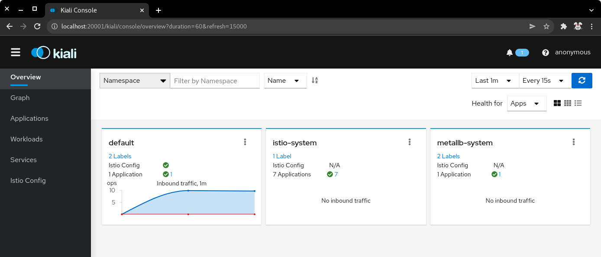
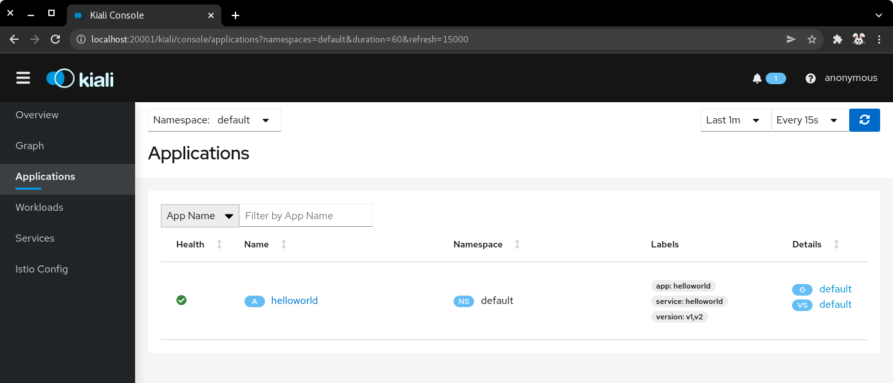
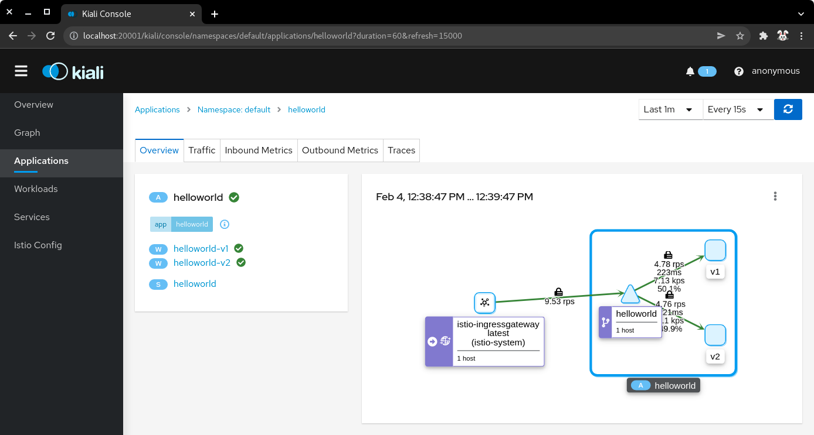
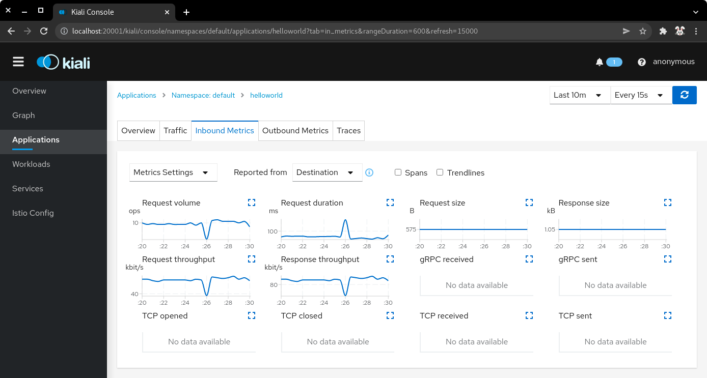
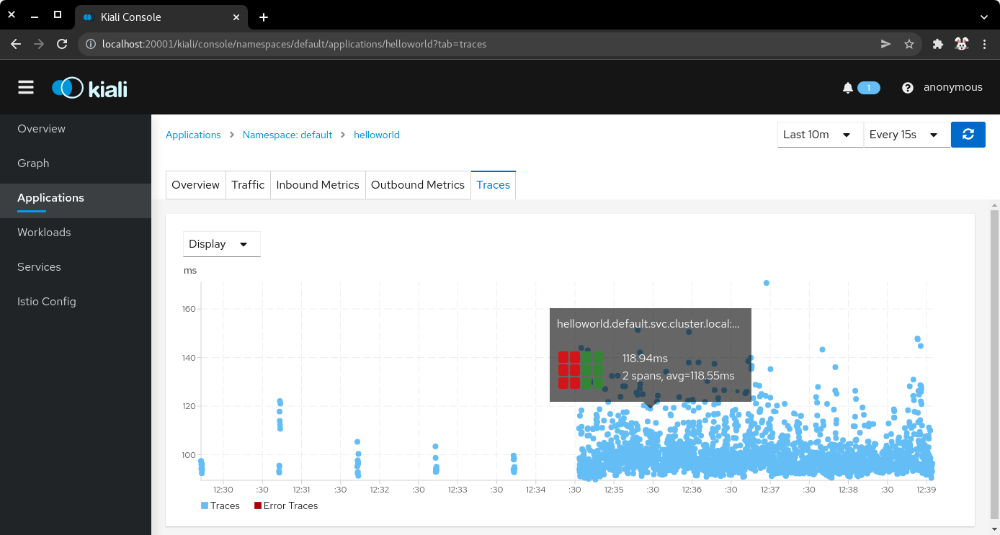
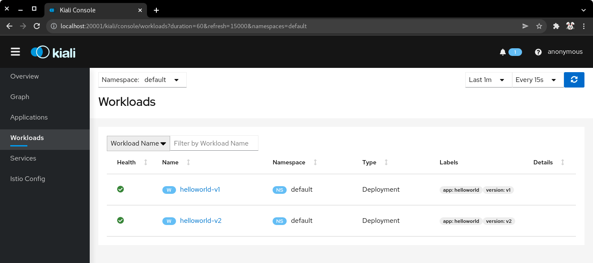
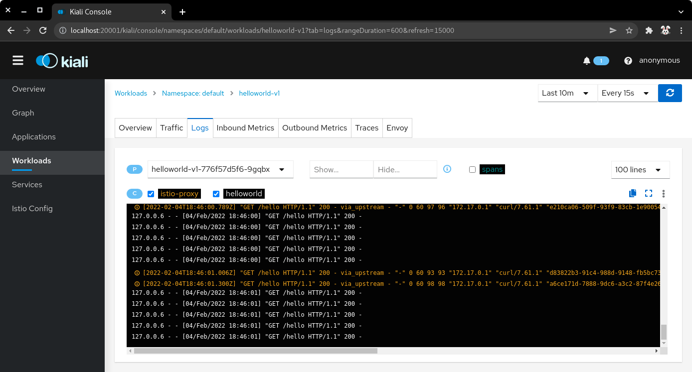
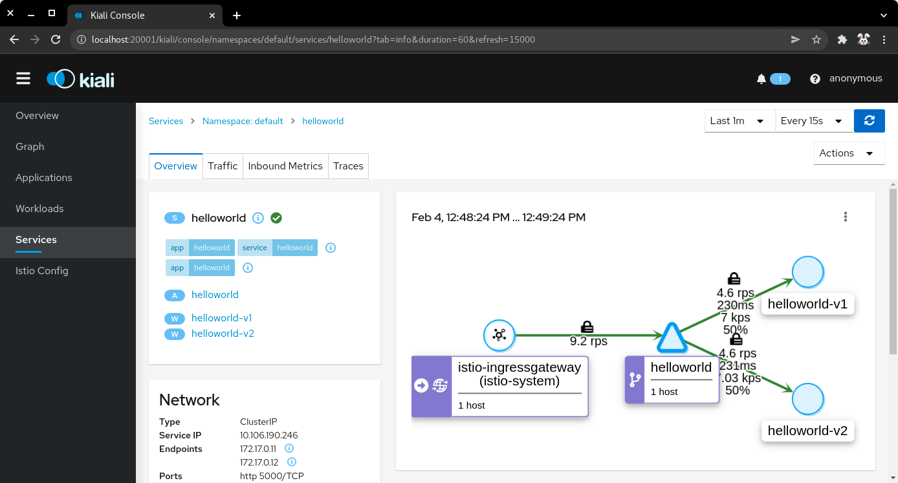
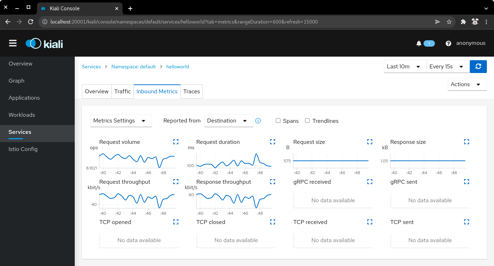

Guided Exercise: Installing Istio on a Minikube Cluster
In this exercise, you will install Istio on a minikube cluster.
Outcomes
You should be able to:
-
Install Istio on the minikube cluster.
-
Get the Istio ingress service endpoint.
-
Deploy the Istio add-ons.
-
Create an example application to test the Istio installation.
To perform this exercise, ensure that you have:
-
The
kubectl, andminikubeexecutables version 1.24 or later on a directory listed in${PATH}. -
MetalLB installed in the cluster. You can consult the installation guided exercise.
|
Note
|
Minikube provides Istio as an add-on. However, the version is outdated and cannot be installed in recent versions of Kubernetes. |
Procedure instructions
1) Start the minikube instance, and verify that MetalLB is installed.
1.1) Start the minikube instance.
[user@host kbe]$ minikube start --cpus=4 --memory=8g
...output omitted...|
Note
|
Istio requires 4 vCPUs and 8GB of RAM to work in minikube. |
1.2) Verify that the pods in the metallb-system namespace are running.
[user@host kbe]$ kubectl get pods -n metallb-system
NAME READY STATUS RESTARTS AGE
controller-66bc445b99-2gv6w 1/1 Running 0 1h
speaker-jxjdm 1/1 Running 0 1h|
Warning
|
This guided exercise assumes that MetalLB is installed and configured. |
1.3) Verify that MetalLB has the IP address range configured.
[user@host kbe]$ kubectl get configmap config -n metallb-system -o yaml
apiVersion: v1
data:
config: |
address-pools:
- name: default
protocol: layer2
addresses:
- 192.168.59.20-192.168.59.30
...output omitted...|
Warning
|
If the IP address range for MetalLB is empty then review the troubleshooting section in the MetalLB lecture. |
2) Install Istio on the minikube cluster.
2.1) Download an archive of the Istio release.
[user@host kbe]$ export ISTIO_VERSION=1.12.1
[user@host kbe]$ wget -c -nv \
https://github.com/istio/istio/releases/download/${ISTIO_VERSION}/istio-${ISTIO_VERSION}-linux-amd64.tar.gz
...output omitted...|
Note
|
You can also clone the Istio source repository and checkout the appropriate tag. |
2.2) Extract the Istio release archive. Delete the archive after extracting because it is not needed any more.
[user@host kbe]$ tar -xzf istio-${ISTIO_VERSION}-linux-amd64.tar.gz
[user@host kbe]$ rm -v istio-${ISTIO_VERSION}-linux-amd64.tar.gz2.3) Install the istioctl executable.
[user@host kbe]$ export PATH="${PATH}:${HOME}/bin"
[user@host kbe]$ mkdir -vp ~/bin
mkdir: created directory '/home/user/bin'
[user@host kbe]$ install --mode 0755 istio-${ISTIO_VERSION}/bin/istioctl ~/bin/2.4) Add the export line at the end of the ~/.bashrc file to have a persistent configuration for the PATH variable.
[user@host kbe]$ echo 'export PATH="${PATH}:${HOME}/bin"' | tee -a ~/.bashrc
export PATH="${PATH}:${HOME}/bin"|
Note
|
The argument to the |
2.5) Verify that the shell can find the istioctl executable, and list the version of the tool.
[user@host kbe]$ which istioctl
~/bin/istioctl
[user@host kbe]$ istioctl version
no running Istio pods in "istio-system"
1.12.12.6) Run a pre-check to inspect if the cluster meets the requirements to install Istio.
[user@host kbe]$ istioctl experimental precheck
✔ No issues found when checking the cluster. Istio is safe to install or upgrade!
To get started, check out https://istio.io/latest/docs/setup/getting-started/2.7) Install Istio in the Kubernetes cluster.
[user@host kbe]$ istioctl install --set profile=demo -y
✔ Istio core installed
✔ Istiod installed
✔ Egress gateways installed
✔ Ingress gateways installed
✔ Installation complete
Making this installation the default for injection and validation.
Thank you for installing Istio 1.12.
Please take a few minutes to tell us about your install/upgrade experience!
https://forms.gle/FegQbc9UvePd4Z9z7|
Note
|
The install command generates an Istio install manifest and applies it to a cluster. |
2.8) List the resources created in the istio-system namespace.
[user@host kbe]$ kubectl get deployments,pods -n istio-system
NAME READY UP-TO-DATE AVAILABLE AGE
deployment.apps/istio-egressgateway 1/1 1 1 4m
deployment.apps/istio-ingressgateway 1/1 1 1 4m
deployment.apps/istiod 1/1 1 1 5m
NAME READY STATUS RESTARTS AGE
pod/istio-egressgateway-687f4db598-wjfkb 1/1 Running 0 4m
pod/istio-ingressgateway-78f69bd5db-s5pjz 1/1 Running 0 4m
pod/istiod-76d66d9876-jvl98 1/1 Running 0 5m|
Note
|
When istio is installed using |
3) Get the Istio ingress service endpoint.
3.1) Get the services in the istio-system namespace.
The external IP address is provided by MetalLB because the ingress gateway service type is LoadBalancer.
This closely matches what you might get when deploying on a cloud environment.
[user@host kbe]$ kubectl get services -n istio-system
NAME TYPE CLUSTER-IP EXTERNAL-IP PORT(S) AGE
istio-egressgateway ClusterIP 10.111.169.103 <none> 80/TCP,443/TCP 5m
istio-ingressgateway LoadBalancer 10.97.37.96 192.168.59.20 15021:30669/TCP,80:32031/TCP,443:31872/TCP,31400:32249/TCP,15443:30657/TCP 5m
istiod ClusterIP 10.103.227.204 <none> 15010/TCP,15012/TCP,443/TCP,15014/TCP 6m|
Note
|
If Istio was installed by using |
3.2) Get the Istio ingress IP address.
[user@host kbe]$ kubectl get service istio-ingressgateway \
-n istio-system \
-o jsonpath='{.status.loadBalancer.ingress[0].ip}{"\n"}'
192.168.59.20
[user@host kbe]$ export INGRESS_HOST="192.168.59.20"|
Note
|
You can export the IP address by using a single command. |
3.3) Get the Istio ingress port numbers for the HTTP and HTTPS endpoints. The service ports match the standard port numbers because MetalLB provided an IP address for this LoadBalancer service.
[user@host kbe]$ kubectl get service istio-ingressgateway \
-n istio-system \
-o jsonpath='{.spec.ports[?(@.name=="http2")].port}{"\n"}'
80
[user@host kbe]$ export INGRESS_PORT="80"
[user@host kbe]$ kubectl get service istio-ingressgateway \
-n istio-system \
-o jsonpath='{.spec.ports[?(@.name=="https")].port}{"\n"}'
443
[user@host kbe]$ export SECURE_INGRESS_PORT="443"|
Note
|
You can export the port numbers by using a single command. |
3.4) Export an environment variable with the ingress gateway IP address and port number.
[user@host kbe]$ export GATEWAY_URL="${INGRESS_HOST}:${INGRESS_PORT}"
[user@host kbe]$ printenv GATEWAY_URL
192.168.59.20:804) Deploy the Istio add-ons.
4.1) List the add-ons provided with the Istio release.
[user@host kbe]$ ISTIO_VERSION=1.12.1
[user@host kbe]$ ls istio-${ISTIO_VERSION}/samples/addons/
extras grafana.yaml jaeger.yaml kiali.yaml prometheus.yaml README.md4.2) Apply the resource manifests for the Istio add-ons.
[user@host kbe]$ kubectl apply -f istio-${ISTIO_VERSION}/samples/addons
...output omitted...4.3) Verify that the deployments in the istio-system namespace show a ready status.
[user@host kbe]$ kubectl get deployments -n istio-system
NAME READY UP-TO-DATE AVAILABLE AGE
grafana 1/1 1 1 2m
istio-egressgateway 1/1 1 1 12m
istio-ingressgateway 1/1 1 1 12m
istiod 1/1 1 1 12m
jaeger 1/1 1 1 2m
kiali 1/1 1 1 2m
prometheus 1/1 1 1 2m|
Note
|
You might need to repeat the command until the desired condition is reached. |
5) Create an example application
5.1) Enable the sidecar injection for the default namespace to add an istio-proxy container on each pod to control ingress and egress traffic.
[user@host kbe]$ kubectl label namespace default istio-injection=enabled --overwrite
namespace/default labeled5.2) Deploy an example application.
[user@host kbe]$ export ISTIO_VERSION=1.12.1
[user@host kbe]$ kubectl apply -f \
istio-${ISTIO_VERSION}/samples/helloworld/helloworld.yaml
service/helloworld created
deployment.apps/helloworld-v1 created
deployment.apps/helloworld-v2 created|
Note
|
You can use the resource manifest from GitHub if you do not have the Istio release archive files. |
5.3) Verify that the deployment and pod are ready.
[user@host kbe]$ kubectl get deployments,pods -l app=helloworld
NAME READY UP-TO-DATE AVAILABLE AGE
deployment.apps/helloworld-v1 1/1 1 1 2m
deployment.apps/helloworld-v2 1/1 1 1 2m
NAME READY STATUS RESTARTS AGE
pod/helloworld-v1-776f57d5f6-mfkf7 2/2 Running 0 2m
pod/helloworld-v2-54df5f84b-wdx5n 2/2 Running 0 2m|
Note
|
You might need to repeat the command until the desired condition is reached. |
5.4) Verify that the service is present.
[user@host kbe]$ kubectl get services -l app=helloworld
NAME TYPE CLUSTER-IP EXTERNAL-IP PORT(S) AGE
helloworld ClusterIP 10.101.60.68 <none> 5000/TCP 3m5.5) Create the gateway and virtual service to access the example application.
[user@host kbe]$ kubectl apply -f \
istio-${ISTIO_VERSION}/samples/helloworld/helloworld-gateway.yaml
gateway.networking.istio.io/helloworld-gateway created
virtualservice.networking.istio.io/helloworld created|
Note
|
The parameters of the gateway and virtual service resources are covered in the traffic management section. You can use the resource manifest from GitHub if you do not have the Istio release archive files. |
5.6) Verify that the gateway and virtual service resources are deployed.
[user@host kbe]$ kubectl get gateways,virtualservices
NAME AGE
gateway.networking.istio.io/helloworld-gateway 60s
NAME GATEWAYS HOSTS AGE
virtualservice.networking.istio.io/helloworld ["helloworld-gateway"] ["*"] 60s5.7) Get the URL path prefix for the application.
[user@host istio]$ kubectl get virtualservice helloworld \
-o jsonpath='{.spec.http[0].match[0].uri}{"\n"}'
{"exact":"/hello"}|
Note
|
The parameters of the virtual service resource are covered in the traffic management section. |
6) Generate traffic for the example application.
6.1) Access the example application with curl.
[user@host kbe]$ curl -vk# "http://${GATEWAY_URL}/hello"
* Trying 192.168.59.20...
* TCP_NODELAY set
* Connected to 192.168.59.20 (192.168.59.20) port 80 (#0)
> GET /hello HTTP/1.1
> Host: 192.168.59.20
> User-Agent: curl/7.61.1
> Accept: */*
>
< HTTP/1.1 200 OK
< content-type: text/html; charset=utf-8
< content-length: 60
< server: istio-envoy
< date: Fri, 04 Feb 2022 02:48:11 GMT
< x-envoy-upstream-service-time: 123
<
Hello version: v1, instance: helloworld-v1-776f57d5f6-mfkf7
* Connection #0 to host 192.168.59.20 left intact6.2) Inspect the commands contained in the loadgen.sh script.
[user@host istio]$ grep -v '^#' \
istio-${ISTIO_VERSION}/samples/helloworld/loadgen.sh
while true; do curl -s -o /dev/null "http://$GATEWAY_URL/hello"; done6.3) Generate traffic for the example application.
[user@host kbe]$ ./istio-${ISTIO_VERSION}/samples/helloworld/loadgen.sh
...output omitted...7) Access the Istio dashboard.
7.1) Open another terminal and execute the following command to view the Istio Kiali dashboard.
[user@host kbe]$ istioctl dashboard kiali
http://localhost:20001/kiali| Istio Kiali dashboard |
|---|

|
7.2) Click on the applications, and select the default namespace.
Click on the helloworld application name.
| k8s applications |
|---|

|
7.3) The overview tab displays the connections between the Istio ingress gateway, the application service, and the pods that process the requests.
| Application overview |
|---|

|
7.4) Click on the application name, and then click on the Inbound Metrics tab. Wait one minute while the network traffic graphs are updated.
| Application inbound metrics |
|---|

|
7.6) Click on the Traces tab to show the graph with data points for each processed request. Hover on any data point to view the duration of the processing.
| Application traces |
|---|

|
7.7) Click on Workloads, then click on the deployment name helloworld-v1.
| Kiali workloads |
|---|

|
7.8) Click on the Logs tab to display the logs for the pod containers.
You can select the check boxes to filter the logs for the helloworld application container or the istio-proxy container.
| Application logs |
|---|

|
7.9) Click on Services, then click on the helloworld service.
The service topology is displayed.
| Application topology |
|---|

|
7.10) Click on the Inbound Metrics tab to display the metrics for the ingress traffic for this particular service.
| Service metrics |
|---|

|
|
Note
|
The |
8) Clean up
8.1) Close the browser window where the Istio Kiali dashboard is displayed.
8.2) Press Ctrl+C on the terminal window where the istioctl command is running.
[user@host kbe]$ istioctl dashboard kiali
http://localhost:20001/kiali
^C8.3) Press Ctrl+C on the terminal window where the loadgen.sh script is running.
[user@host kbe]$ ./istio-${ISTIO_VERSION}/samples/helloworld/loadgen.sh
^C8.4) Review the gateways and virtual services present in the current namespace.
[user@host kbe]$ kubectl get gateways
NAME AGE
helloworld-gateway 1h
[user@host kbe]$ kubectl get virtualservices
NAME GATEWAYS HOSTS AGE
helloworld ["helloworld-gateway"] ["*"] 1h8.5) Delete the gateway and virtual service resources.
[user@host kbe]$ kubectl delete gateway helloworld-gateway
gateway.networking.istio.io "helloworld-gateway" deleted
[user@host kbe]$ kubectl delete virtualservice helloworld
virtualservice.networking.istio.io "helloworld" deleted8.6) Review the resources with the app=helloworld label.
[user@host kbe]$ kubectl get all -l app=helloworld
NAME READY STATUS RESTARTS AGE
pod/helloworld-v1-776f57d5f6-mfkf7 2/2 Running 0 1h
pod/helloworld-v2-54df5f84b-wdx5n 2/2 Running 0 1h
NAME TYPE CLUSTER-IP EXTERNAL-IP PORT(S) AGE
service/helloworld ClusterIP 10.101.60.68 <none> 5000/TCP 1h
NAME READY UP-TO-DATE AVAILABLE AGE
deployment.apps/helloworld-v1 1/1 1 1 1h
deployment.apps/helloworld-v2 1/1 1 1 1h
NAME DESIRED CURRENT READY AGE
replicaset.apps/helloworld-v1-776f57d5f6 1 1 1 1h
replicaset.apps/helloworld-v2-54df5f84b 1 1 1 1h8.7) Delete all the resources with the app=helloworld label.
[user@host kbe]$ kubectl delete all -l app=helloworld
pod "helloworld-v1-776f57d5f6-mfkf7" deleted
pod "helloworld-v2-54df5f84b-wdx5n" deleted
service "helloworld" deleted
deployment.apps "helloworld-v1" deleted
deployment.apps "helloworld-v2" deleted
replicaset.apps "helloworld-v2-54df5f84b" deleted8.8) Remove the label from the default namespace.
[user@host kbe]$ kubectl label namespace default istio-injection-
namespace/default labeled|
Note
|
The dash at the end of the command is used to instruct |
This concludes the guided exercise.
|
Note
|
The Istio installation is required for other guided exercises. |